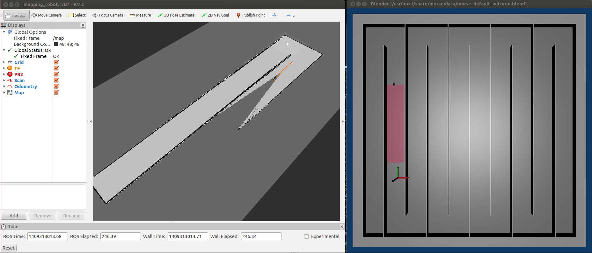

Category Archives: Sucré
Collaborative Exploration of Indoor Environment with Two RobuLAB-10 Robots
ROS packages for multi-robot exploration
Recently, we released several ROS packages for multi-robot exploration, including:
- explore_multirobot http://wiki.ros.org/explore_multirobot: is a multi-robot version of the explore package.
- map_merging http://wiki.ros.org/map_merging: merges multiple maps with knowledge of the initial relative positions of robots.
- tf_splitter http://wiki.ros.org/tf_splitter: decomposes the /tf topic into multiple ones.
- pose_publisher http://wiki.ros.org/pose_publisher: provides current position and orientation of the robot in the map.
These packages have been tested in ROS Groovy. However, Groovy is EOLed and there are no documentation or release jobs running anymore. We will test in more recent versions in order to improve our wiki.
Performance Benchmarking for Multi-Robot Exploration
Getting current pose of robot using tf listener
Our coordination framework for multi-robot exploration needs to know the current robot’s pose (position and orientation) within the explored map frame.
There are two ways to achieve it:
1 – Using costmap function.
bool costmap_2d::Costmap2DROS::getRobotPose(tf::Stamped& global_pose) const
2 – Using tf listener.
geometry_msgs::PoseStamped pose_stamped;
pose_stamped.header.stamp = ros::Time::now();
pose_stamped.header.frame_id = tf_prefix + "/" + map_frame;
pose_stamped.pose.position.x = transform.getOrigin().getX();
pose_stamped.pose.position.y = transform.getOrigin().getY();
pose_stamped.pose.position.z = transform.getOrigin().getZ();
pose_stamped.pose.orientation.x = transform.getRotation().getX();
pose_stamped.pose.orientation.y = transform.getRotation().getY();
pose_stamped.pose.orientation.z = transform.getRotation().getZ();
pose_stamped.pose.orientation.w = transform.getRotation().getW();
pose_publisher.publish(pose_stamped);
A complete implementation of the second method can be found http://wiki.ros.org/pose_publisher.
Both methods need a transform from “map” to “odom” (gmapping can do this).
Our coordination framework will be released after the corresponding paper has been published.
Manually building an environment map in MORSE
To check the accuracy of the exploration map, we need to compare with a pre-built one.
Of course, the latter needs to have a good accuracy.
We provide here a tool to manually build an environment map in MORSE.
This tool has the following features:
- Map building using gmapping ROS package.
- Robot with perfect odometry.
- Visualize the mapping process using rviz ROS package.

explore package for ROS Indigo
A lot of changes have been made between ROS Groovy and Indigo.
For now, there is no official version of explore package supporting ROS Indigo.
So, here you can find a ROS Indigo compatible rosbuild explore package.
This package is modified from its original version: http://wiki.ros.org/explore.
Installation of STDR Simulator on ROS Groovy
Recently, our research team tested a new robotics simulator named STDR Simulator. The simulator natively supports ROS Hydro, but we have still successfully installed it on ROS Groovy. Here is our installation record, hoping to help someone. (This record is also released on wiki.ros.org)
1. Get stdr_simulator from Github
Since stdr_simulator is a catkin package, you will need a catkin workspace in order to build the package from source. If you don’t already have a catkin workspace, you will find details in this ros tutorial.
cd your_catkin_ws/src
git clone https://github.com/stdr-simulator-ros-pkg/stdr_simulator.git
NOTE: on Ubuntu 13.04 (raring), where Qt5 is installed by default, you need to specify the path to qmake-qt4 when you invoke catkin_make:
catkin_make -DQT_QMAKE_EXECUTABLE=/usr/bin/qmake-qt4
2. Get cmake_modules for Groovy from Github
cmake_modules is a common repository for CMake Modules which are not distributed with CMake but are commonly used by ROS packages. You will need this package to solve some problems such as stdr_parser: Could not find module FindTinyXML.cmake.
git clone https://github.com/ros/cmake_modules.git
3. Get a catkin version map_server
You need to get a Groovy compatible catkin map_server package for compiling stdr_server and stdr_gui package: map_server. Then put it in your_catkin_ws/src
4. Build the simulator
Assuming you are still in your_catkin_ws/src directory:
cd ..
catkin_make
5. Possible problems in header or library path with map_server
Error 1: stdr_server/map_loader.h:32:37: fatal error: map_server/image_loader.h: No such file or directory
The easiest way to solve this error is that just replace #include “map_server/image_loader.h” by #include “the_absolute_path_of/map_server/image_loader.h” in stdr_server/map_loader.h file.
Error 2: /usr/bin/ld: cannot find -limage_loader
Solution:
sudo ln -s /opt/ros/groovy/stacks/navigation/map_server/lib/libimage_loader.so /usr/lib/libimage_loader.so